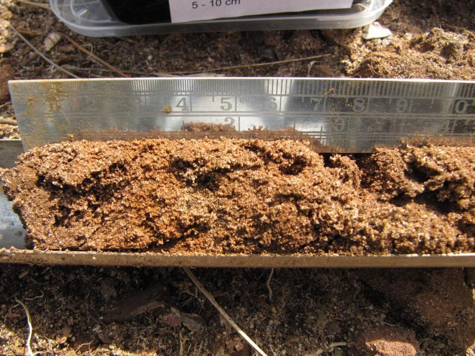

Bemonsteren aan de hand van oppervlaktemonsters
Manueel met steekguts
Nathalie Cools
 0000-0002-7059-2318
0000-0002-7059-2318
Bruno De Vos
0000-0001-9523-3453
2024-01-08
Metadata
| reviewers | documentbeheerder | protocolcode | versienummer | taal | thema |
|---|---|---|---|---|---|
| Hans Van Calster | Hans Van Calster | sfp-201-nl | 2024.01 | nl | soil |
Controleer deze tabel om te zien of een meer recente versie beschikbaar is.
1 Wijzigingen t.o.v. vorige versies
1.1 2024.01
Omzetting van Word versie van het protocol (oud versienummer 1.5)
Voorafgaande historiek:
- Revisie 1.5 (12-05-2021) bevat enkele aanvullingen van de veiligheidsmaatregelen t.o.v. revisie 1.4.
- Revisie 1.4 (12-09-2018) bevat actualisatie van revisie 1.3 (05-04-2017) na het terreinwerk gedurende de zomers van 2017 en 2018 uitgevoerd in het kader van het HabNorm project (PAS-PPB 2015 – 2019 project). Het protocol werd veralgemeend om toepasbaar te zijn op het ganse Instituut. Verwijzingen naar projectspecifieke situaties en variabelen zijn in bijlage opgenomen. De tekst werd door gekopieerd naar het daartoe bestemde sjabloon. De definities van een endo- en ecto- organisch laag werd geactualiseerd.
3 Onderwerp
3.1 Definities en afkortingen
Bodemoppervlak: het bodemoppervlak vormt de referentie voor de 0 cm lijn. Het is de bovenkant van het bodemlichaam waarvan een oppervlakte staal wordt genomen. De matrix van het bodemlichaam kan zowel organisch als mineraal zijn. In terrestrische systemen is het de scheiding tussen de ecto-organische en de endo-organische laag. In semiterrestrische systemen is het de scheiding tussen de ecto-organische en de organische bodem of veenbodem.
Ecto-organische laag (of ectorganische laag): Bij een ectorganische laag is het organische materiaal afkomstig van strooisel van planten dat bovenop het profiel is geaccumuleerd maar nog niet ingewerkt is en een organisch koolstofgehalte heeft van meer dan 20% bvb. strooisel, hooi - of rietresten, maaisel, mossen, schapenkeutels, koeienvlaaien, takken, vruchten, bladeren, …
Endo-organische laag (of endorganische laag): Een endorganische laag is een combinatie van minerale bodem met ingewerkt organisch materiaal van welke oorsprong dan ook.
In terrestrische systemen is het organische materiaal veelal door biologische en fysische processen in de bodem opgenomen. Het organische koolstof (OC) gehalte is lager dan 20%.
In semi-terrestrische systemen worden veenlagen en (levende) wortelmatten ook tot de endorganische laag gerekend.
De ecto - en de endo-organische laag vormen samen de holorganische laag.
Monster of staal: in Vlaanderen zijn de begrippen ‘monster’ en ‘staal’ onderling inwisselbaar. Ze betekenen dus exact hetzelfde. ‘Monster’ is een meer gangbare term in Nederland en wordt ook gehandhaafd in dit protocol. Het is een portie materiaal dat geselecteerd werd uit een grotere hoeveelheid materiaal.
Mengmonster: is hier een ruimtelijk mengmonster. Het is dus een samengesteld monster dat verkregen wordt door (deel)monsters te mengen. De deelmonsters zijn genomen op meerdere plaatsen volgens een specifiek diepte-interval.
Laboratoriummonster: een monster zoals het binnengebracht wordt in het analytisch laboratorium. Het laboratoriummonster is het finale monster vanuit het standpunt van bemonstering en eventuele voorbehandeling (drogen, deeltjes verkleinen en homogeniseren), maar het initiële monster vanuit het standpunt van het analytisch laboratorium. In laboratoriumtermen is dit het ‘natief staal’.
Oppervlaktemonster: een oppervlaktemonster is een monster genomen net onder het bodemoppervlak zonder de strooisellaag, op een diepte tot maximaal 30 cm diepte.
Proefvlak: dit is de oppervlakte waarbinnen biotische en/of abiotische waarnemingen worden verricht. De dimensies zijn project-specifiek.
(Semi)-terrestrisch: terrestrisch betekent voorkomend op het land, op of in de grond levend, voorkomend op minerale substraten. Semi-terrestrisch betekent ecosystemen met verlandings- en watervegetaties, voorkomend (groeiend) op organische substraten.
Veenbodem: een veenbodem is een bodemtype (Histosol) dat opgebouwd is uit geaccumuleerd en slechts gedeeltelijk afgebroken organisch materiaal (minimaal 40 cm dik). Een veenbodem wordt in onze streken steeds gevormd in natte omstandigheden.
3.2 Doelstelling en toepassingsgebied
Doelstelling: De hier beschreven bemonsteringsmethode heeft betrekking op het nemen van een representatief oppervlaktemonster gekoppeld aan een proefvlak, welke een vegetatieopnameplot kan zijn. Analyse van de oppervlaktemonsters leveren informatie aangaande de ruimtelijke patronen (laterale variatie) op standplaatsniveau. Korte afstandsvariabiliteit wordt gestabiliseerd door middel van mengmonsters.
Toepassingsgebied: Dit veldprotocol betreft het nemen van bodemmonsters van de vaste bodemfase in terrestrische en semi-terrestrische systemen, dus het vaste deel van de bodem met de daaraan gebonden stoffen. De techniek is erop gericht om via het nemen van deelmonsters een representatief beeld te krijgen van de bemonsterde puntlocatie (proefvlak met beperkte oppervlakte). De strooisellaag, indien aanwezig, wordt niet mee opgenomen in het monster.
In semi-terrestrische systemen kan de overgang tussen de ectorganische en de organische bodem of veenbodem (endorganische laag) heel geleidelijk en/of onduidelijk zijn. In dat geval, bevindt het bodemoppervlak (0 cm lijn) zich net onder de levende vegetatie. In dat geval zal het oppervlaktemonster zowel levend als dood organische materiaal (o.a. wortels) en slechts een zeer lage fractie aan minerale bodemdeeltjes bevatten.
De laboratoriumanalyses worden uitgevoerd op het (gedroogd) bodemmonster. Bij het maken van een monster voor laboratoriumanalysen wordt bodemvreemd materiaal verwijderd. Het monster wordt reeds op terrein zoveel mogelijk ontdaan van levende materie (plantendelen, levende wortels (diameter > 2 mm, bodemfauna,…), grind en stenen. Verdere voorbehandeling van het staal (drogen, zeven, verkleinen) gebeurt in het laboratorium.
4 Beperkingen van het protocol
Heterogeniteit: bij het bemonsteren van oppervlaktemonsters worden deelmonsters gemengd tot één mengmonster, waarbij verondersteld wordt dat het mengmonster een representatief beeld levert van de lokale bemonsteringsplaats (het proefvlak).
5 Principe
De voorgeschreven bemonsteringsmethode moet de garantie inhouden dat het geanalyseerde bodemmonster voldoende representatief is voor de bodemfysische en bodemchemische kenmerken van het proefvlak. Daarom wordt het aantal deelmonsters en de plaats van de monstername eenduidig vastgelegd volgens een vooropgesteld bemonsteringspatroon.
Alle deelmonsters dienen evenredig (in massa) vertegenwoordigd te zijn in het mengmonster welke vervolgens geanalyseerd wordt in het laboratorium op zijn fysische, biologische en/of chemische eigenschappen.
6 Vereiste competenties
De basisvaardigheden voor het uitvoeren van dit protocol zijn (1) het kunnen gebruiken van een GPS-toestel en (2) het gebruik van een gutsboor. De bodembemonstering beschreven in dit protocol kan dus uitgevoerd worden door alle INBO medewerkers mits het volgen van een ééndagsopleiding op het terrein.
7 Benodigdheden
7.1 Apparatuur
Er zijn allerhande toestellen met GPS mogelijkheden op de markt. Al deze toestellen kunnen gebruikt worden. Vermits de nauwkeurigheid echter afhangt van het type toestel, wordt het type gehanteerde toestel op het opnameformulier vermeld. Mogelijke typen zijn:
- RTK GPS
- Trimble met externe antenne
- Handheld GPS (Garmin, …)
- Smartphone, iPad, iPhone
Digitaal fototoestel (met correcte datum en uurinstelling) of Smartphone, tablet, iPad, iPhone met ingebouwd fototoestel. Correcte instelling van datum en uur is van belang om de foto’s correct te kunnen archiveren.
7.2 Materiaal
- Gutsboor: Een grondboor van het type ‘guts’ (Eng. Gouge auger, figuur 7.1). bestaat uit een cilindervormig boorlichaam waarvan het werkzame deel half cilindrisch is en van boven naar beneden een evenwijdig verloop heeft. Aan de onderzijde bevindt zich een scherpe snijrand. De minimale lengte van de holle buis moet 10 cm langer zijn dan de vooropgestelde bemonsteringsdiepte. De bemonsteringsdiepten moeten aangegeven zijn op de boor. Een diameter van 25 mm is meest geschikt voor de hier beschreven toepassing (minimale verstoring en toch voldoende monster). In zachte gronden wordt een gutsboor gebruikt zonder slagkop (figuur 7.1 links); in hardere gronden een gutsboor mét slagkop (figuur 7.1 rechts).
Figuur 7.1: Links (Foto 1): Set van gutsboren voor gebruik in zachte gronden ©Eijkelkamp; Rechts (Foto 2): Set van gutsboren voor een iets hardere bodem. De gutsen zijn voorzien van een slagkop waarop men met een terugslagvrije hamer kan slaan om de guts dieper in de grond te brengen. ©Eijkelkamp
{kind=link}
{kind=link}
1 Afvalemmertje (2,5 tot 3,0 L, polypropyleen)
1 Mengemmertje (2,5 tot 3,0 L, polypropyleen) om het mengmonster aan te maken
1 Universele handborstel van staaldraad (zie foto 2)
Documentatie om het betreffende proefvlak te lokaliseren:
Afdruk van de orthofoto
aanduiding op topografische kaart
X en Y coördinaat indien de locatie vooraf reeds bepaald is (WGS84, latitude longitude coördinaten in decimale graden)
beschrijving van de toegankelijkheid van het terrein, situatieschets, vegetatietype, al dan niet aanwezigheid van peilbuis,…)
Legitimatiekaart en machtiging van de beheerder of eigenaar van het terrein om het betreffende terrein te betreden en bodemmonsters te nemen
Kompas (analoog, op GPS of App op smartphone)
Doek (synthetisch of katoen) om materiaal te reinigen en af te drogen
Hamer, terugslagvrije, staal met nylon kop (zie Figuur 7.1)
Koelbox of koeltas met vooraf gekoelde koelelementen
1 meetlint, oprolbaar, min 25 m lengte (stalen of fibreglas) om hoekpunten proefvlak uit te zetten)
1 recipiënt (monsterbakje), inhoud 750 ml, (zwart) bakje uit PP (polypropyleen) met doorzichtig deksel van (type Jorapack B x H x L = 15 * 5 * 18 cm)
(Voorgedrukte met proefvlakcode) zelfklevende etiketten, type ‘Heavy Duty’, aantal: 1 per monster
1 spatel, gebogen (Spatel 20, Eijkelkamp, Figuur 7.1)
Opnameformulier (zie voorbeeld in bijlage B)
Schrijfmateriaal: potlo(o)d(en), gum, slijper, dikke permanente markeerstift,
(Voorgedrukte) labels ter markering van het proefvlak op de foto (aantal 1/proefvlak)
Schrijfplank
Vouwmeter (lengte 2 meter met centimeteraanduiding en wisselende kleuraanduiding voor de decimeters)
4 bamboestokjes ter markering van de hoekpunten van het proefvlak
7.3 Reagentia en oplossingen (indien van toepassing)
Leidingwater in plastieken bidon, inhoud 5 L om materiaal te reinigen
Drie druppelflesjes (inhoud 30-50 ml) met de volgende reagentia/oplossingen:
- Zoutzuur (HCl), 10 %. Sterk zuur, bijtend. Gebruik handschoenen bij gebruik druppelflesje.
- \(\alpha\) – \(\alpha\)’ dipyridyl (IUPAC 2,2’-Bipyridine) is een 97% zuivere vaste stof in oplossing gebracht met 1 N ammoniumacetaat gebufferd op pH=7. Gebruik handschoenen bij gebruik druppelflesje.
- Waterstofperoxide (H2O2), 10 %. Sterk zuur. Gebruik handschoenen bij gebruik druppelflesje.
8 Werkwijze
8.1 Uitvoering
In elke rastercel van het proefvlak worden de monsters manueel genomen met een gutsboor. Het overtollig bodemmateriaal wordt verwijderd van de boor en verzameld in het afvalemmertje om na de bemonstering de boorgaten opnieuw te vullen. De verschillende deelmonsters (één per rastercel) worden ontdaan van bodemvreemd materiaal en samengebracht in het mengemmertje om een mengmonster te maken. Het gehomogeniseerd mengmonster wordt overgebracht in een laboratorium recipiënt, getransporteerd en bewaard volgens de voorschriften tot verdere behandeling.
8.1.1 Bemonsteringsstrategie
8.1.1.1 Uitzetten van het bemonsterinsproefvlak
De staalname van de oppervlaktemonsters gebeurt in vierkante proefvlakken. Afmetingen van het proefvlak zijn projectspecifiek te bepalen. Het hoekpunt dat het meest naar het noorden gericht is, krijgt het volgnummer 1 (zie figuur 8.1). Plaats hier een eerste bamboestokje. Meet de zijde af in oostelijke richting. Plaats een tweede bamboestokje. Meet de zijde af in zuidelijke richting, loodrecht op de eerste zijde. Plaats een derde bamboestokje. Controleer de lengte van die diagonaal en corrigeer de plaats van het derde bamboestokje. Plaats het vierde bamboestokje westelijk van het derde en zuidelijk van het eerste bamboestokje. Controleer de afstanden en corrigeer de plaatsing van de bamboestokjes indien nodig.
8.1.1.2 Aantal deelmonsters
De oppervlakte van het proefvlak wordt opgedeeld in gelijke vierkanten (zie voorbeeld in figuur 8.1 waar 9 gelijke vierkanten worden onderscheiden). In elk van die vierkanten wordt één deelmonster zo centraal mogelijk genomen. Om voldoende staal te verzekeren zodat de meest courante bodemanalyses kunnen uitgevoerd worden, wordt bij een keuze van 9 deelmonsters en een bemonsteringsdiepte van 10 cm, best een guts van 25 mm diameter gebruikt (1 steek met de guts = 1 deelmonster). Het verminderen van het aantal steken bij het gebruik van een guts met een grotere diameter is niet toegelaten omdat dit de representativiteit van het mengmonster verkleint.
Figuur 8.1: Schematische weergave van de oriëntatie en spreiding van de deelmonsters (rode punten) over het proefvlak
8.1.2 Praktische werkwijze voor het nemen van één deelmonster
- Breng de guts handmatig zo verticaal mogelijk in de grond zonder de guts daarbij te draaien. Bij harde bodem gebruik je een guts met slagkop (zie Figuur 8.2) zodat je de guts met een terugslagvrije hamer (Figuren 7.1 en 8.2) dieper de grond kan inhameren. Zo wordt de holle buis van de guts gevuld met bodemmateriaal.
Figuur 8.2: Links: Gebruik van een guts met slagkop ©Eijkelkamp Rechts: Afsnijden van het bodemmateriaal langs de gutsboorranden ©Eijkelkamp
Vervolgens draai je de guts éénmaal om zijn as waardoor het bodemmonster wordt ‘losgesneden’. Let op dat je de guts niet dieper de grond induwt.
Trek vervolgens de guts zachtjes met een draaibeweging uit de grond. Het draaien zorgt voor minder bodemverlies en werkt de onderdruk tegen die onder de guts aanwezig is. Zo bekomt men dus een minimaal geroerd monster (Figuur 8.3).
Minimaal geroerd bodemmateriaal bij bodembemonstering met een guts © N. CoolsHet materiaal in de guts zal aan open zijde van de holle buis steeds wat materiaal bevatten van de bovenliggende lagen. Dit materiaal wordt verwijderd met de spatel of een mes en opgevangen in een ‘afvalbakje’.
Vervolgens snijd je met de gebogen spatel de cilindrische kolom bodemmateriaal af langs de gutsboorranden (zie Figuur 8.2). Het achtergebleven bodemmateriaal is geschikt voor bemonstering.
Vervolgens duid je met de spatel het te bemonsteren diepte-interval aan (bvb. 0 – 10 cm) op het materiaal in de boor door dit lichtjes in te snijden. Dit is het moment voor het nemen van een foto.
Vervolgens verwijder je het teveel aan materiaal in het ‘afvalemmertje’ en verzamel je het bodemmateriaal uit het gewenste diepte-interval in het mengemmertje.
Verwijder alle levende materie (plantendelen zoals knolletjes, bodemdiertjes, levende wortels,…). Grind en stenen worden handmatig zo goed mogelijk uit het mengemmertje verwijderd. Herhaal dit voor alle deelmonsters (foto is slechts noodzakelijk voor één deelmonster).
Bereiden van een mengmonster:
- Het materiaal wordt in het mengemmertje manueel gemengd en gehomogeniseerd met behulp van een spatel. De bodemstructuren worden hierbij opgebroken en stenen, levende wortels of andere plantendelen worden manueel verwijderd. Noot: in een kleiige bodem is dit niet eenvoudig en moet het ganse mengstaal in zijn geheel meegenomen worden.
- Het monster wordt vervolgens overgebracht in het monsterbakje. Het eventueel teveel aan bodemmateriaal wordt in het afvalemmertje verzameld. Het materiaal uit het afvalemmertje verdeel je over de boorgaten zodat de boorgaten terug min of meer afgesloten zijn.
8.2 Registratie en bewaring van resultaten
8.2.1 Invullen van het opnameformulier
Per mengmonster wordt het opnameformulier volledig ingevuld en de aan- of afwezigheid van de relevante kenmerken genoteerd (voorbeeld: zie bijlage B).
Het opnameformulier wordt, nadat het volledig werd ingevuld met onuitwisbare inkt, ingescand en digitaal bewaard op een centrale locatie (bvb. Google Drive). Het papieren formulier wordt overgemaakt aan de verantwoordelijke wetenschapper die alle opnameformulieren van de survey centraal bewaart. Elke staalnemer voert de informatie van het opnameformulier digitaal in zoals voorzien binnen het betreffende onderzoeksproject.
8.2.2 Nemen van foto’s van het bemonsterd proefvlak
Er worden twee foto’s van het proefvlak genomen: één voor de bodembemonstering en één na de bemonstering (waar de bemonsteringspunten in het proefvlak maximaal zichtbaar zijn). Er wordt tenminste één foto van de boorkern in de guts genomen (detailfoto). Specifieke kenmerken (zie opnameformulier) worden ook gefotografeerd.
Op de detailfoto wordt eveneens het ID van het proefvlak en datum van staalname weergegeven, samen met de schaalaanduiding d.m.v. bv. een vouwmeter. De digitale foto’s worden zo snel mogelijk na de opname hernoemd met naam van het proefvlak en gefotografeerd kenmerk en op een centrale locatie bvb. Google Drive bewaard. De volgende principes worden gehanteerd bij de naamgeving van de foto’s: de naam van de foto gaat van algemeen naar specifiek. Een voorbeeldje:
- De foto van het proefvlak/plot: CODEPROEFVLAK_PLOT
- De foto van het 0 – 10 cm staal: CODEPROEFVLAK_M01
8.2.3 Identificatie (etikettering) van de monsters
De volgende informatie moet minimaal op de recipiënten aanwezig zijn. Bij voorkeur wordt deze informatie vooraf (indien reeds beschikbaar) op ‘heavy duty’ etiketten afgedrukt.
- Plaatsnaam (hoofdgemeente en toponiem)
- Unieke veldidentificatiecode van het proefvlak
- Bemonsteringsdiepte (in dit geval 0 – 10 cm)
- Datum van bemonstering
- Naam staalnemer
8.2.4 Transport, bewaring en documentatie van de monsters
Monsters kunnen ten gevolge van fysische, chemische of biologische reacties wijzigingen ondergaan tussen het ogenblik waarop ze worden genomen en de analyse. Om dit te voorkomen worden de volgende voorzorgsmaatregelen getroffen:
- De stalen worden op het terrein in de monsterbakjes gebracht en onmiddellijk afgesloten en buiten het bereik van direct zonlicht geplaatst.
- De stalen worden op terrein voor het transport bewaard in een koelbox met koelelementen.
- De stalen worden dezelfde dag overgebracht naar een koelkast of koelcel (< 4°C) totdat de verdere voorbehandeling kan voortgezet worden.
Een digitale stalenlijst wordt overgemaakt aan de verantwoordelijke voor de staalvoorbereiding (drogen en verkleinen). De stalenlijst bevat minimaal de volgende informatie:
- Projectnaam of projectcode
- Naam staalnemer
- Naam projectverantwoordelijke
- Datum van bemonstering
- Plaatsnaam (hoofdgemeente en toponiem)
- Matrixtype (organisch, mineraal)
- Veldidentificatiecode van het staal
- GPS coördinaten (Lambert72 of/en geografische coördinaten WGS84, graden (°), minuten (’), seconden (“) of in decimale graden)
9 Kwaliteitszorg
Het is van essentieel belang dat het gebruikte materiaal en recipiënten zuiver zijn. Men dient steeds nauwkeurig en proper te werken. De guts wordt met de borstel schoongeveegd na elke steek. De gutsen dienen jaarlijks en zo nodig bijgesneden te worden.
Een guts vertoont slechts 10 cm diepte intervallen, maar het betreffende segment (bvb. 0 - 10 cm) van de bodemlaag bevindt zich zelden perfect tussen deze aanduidingen. De diepte dient steeds gemeten te worden met vouw- of plooimeter, of meetlat.
Om het niet kleven van de etiketten (bvb. bij nat weer of vuile handen) te voorkomen, kunnen de etiketten best vooraf geprint worden en op de monsterbakjes worden gekleefd. Gebruik ‘heavy duty’ (waterbestendige) etiketten, aangezien deze beter kleven en beter tegen vocht en vuil kunnen dan gewone etiketten.
Om je tel niet te vergeten bij het nemen van de deelstalen, enkele tips:
Werk het proefvlak steeds volgens hetzelfde bemonsteringspatroon af bvb. je werkt kloksgewijs (wijzerzin), beginnende bij het meest noordelijk hoekpunt (bamboestokje nummer 1) en sluit af met het staal in het centrum van het proefvlak.
Sluit de boorgaatjes niet onmiddellijk af. Zo kan je zien welke rastercellen je al dan niet bemonsterd hebt.
Meng het staal pas nadat je alle deelmonsters hebt verzameld in je mengbakje. Als het staal voldoende cohesief is, kan je de deelmonsters nog tellen.
10 Veiligheid
De metingen worden uitgevoerd op het terrein; de veiligheidsvoorschriften opgesteld voor het veldwerk dienen gevolgd te worden.
Controleer voor het betreden van het terrein of aanwezig grazers geen gevaar kunnen vormen.
Draag aangepast schoeisel, zorg voor beschermende kledij of middelen (tegen irriterende planten, insecten, zon,…).
Betreed moeilijk begaanbare, moerassige terreinen in duo of zorg minstens dat je een GSM met noodnummers bij hebt.
Wanneer je de guts uit de grond haalt, houd je rug recht en je knieën gebogen om letsels te vermijden.
Wees voorzichtig bij het ledigen van de boor zodat je jezelf niet snijdt aan de snijranden van de boor of aan de snijranden van de spatel/mes.
Wees voorzichtig tijdens onweer in het open veld. Je draagt immers een metalen staaf met je mee wat de bliksem kan aantrekken.
Stoot je op een ondoordringbare laag of een grote steen of boomwortel, forceer de boor dan niet want je zou het materiaal kunnen beschadigen. Steek beter opnieuw op een andere plaats (bvb. in geval van een stenige bodem).
In het geval dat je een hamer moet gebruiken op een guts met een slagkop, gebruik steeds een terugslagvrije hamer (Figuur 7.1). Gebruik zeker nooit metalen hamers.
Houd de guts steeds vast bij de synthetische handvaten tijdens het boren. Deze zorgen voor isolatie indien je een ondergrondse elektriciteitskabel zou raken.
11 Samenvatting
11.1 Methoderecept
Baken het proefvlak af en verdeel het in 9 rastercellen
Neem eerst van elke rastercel een monster kloksgewijs (in wijzerzin), eindig met het centrale monster
Verwijder bij elk monsters het overtollig materiaal van de guts
Neem van elk monster het gewenste materiaal (in dit geval van 0 – 10 cm diep) en breng in een mengemmertje
Verwijder zoveel mogelijk het materiaal dat niet mee opgenomen mag worden in het laboratoriummonster (levend materiaal, steentjes, …)
Homogeniseer het mengmonster in een mengemmertje en breng over in een monsterbakje
Etiketteer het mengmonster
Vul het opnameformulier in (voorbeeld in bijlage B)
Sluit de boorgaten af met overtollig monster
Bewaar het mengmonster
A Bijlage: instelwaarden
| naam | waarde |
|---|---|
| Proefvlak vorm | vierkant |
| Bemonsteringsdiepte begin (cm) | 0 |
| Bemonsteringsdiepte einde (cm) | 10 |
| Aantal steken | 9 |
| Guts diameter (mm) | 25 |
B Bijlage: Opnameformulier voor oppervlaktemonsters
Dit formulier wordt in een afzonderlijk PDF document bewaard zodat het duidelijk op twee zijden van een A4 blad kan afgedrukt worden.